Setting Up Visual Studio Code#
This is written assuming you’ve already installed and setup Python using miniforge as instructed here. If you haven’t, please go do that now!
As noted in our previous reading, here in Duke MIDS we’re converging on using VS Code in our courses as our “preferred” tool for editing and running code. That’s not because we necessarily because we think it’s “the objectively best editor”—what editor is best for an individual depends a lot on their own background, programming style, and work flow!— but rather because we think it’s a good fit for most students. Moreover, by all supporting the same editor, we can help you get really good with VS Code—not everyone will agree VS Code is the best editor, but I think all data scientists will agree that getting really good with an editor is an important skill!
So to see why we’re using VS Code, please start out by watching this video. It provides the reasons we chose VS Code, and what we think is exciting about it.
Installing VS Code#
VS Code is kinda stupid-easy to install — just download it here, then put it in your Applications folder (if you’re on a mac), and run the installer (on Windows).
If you don’t put Visual Studio Code in the Application Folder on a mac, it won’t work properly! For security, Macs give different permissions to programs in the Applications folder than in other places (like Downloads).
Sign In#
One great feature of VS Code is that you can associate all of your configurations with your github account, which not only means that they are backed up but also that if you want to use in your browser or when working in the cloud computing, all your settings can be easily synced. To sign in, simply click the Accounts button (a little person in a circle) in the bottom right of VS Code and login with your github account:
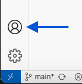
On Mac: Install code on PATH#
Then, if you’re on a Mac, we want to do one more important thing: set up your system so that if you type code [filename] on the command line, VS Code will open [filename] (this gets set up automatically with Windows, but requires a deliberate step on Macs):
In VS Code, type
Command-Shift-P. This will cause the Command Palette—a text box that provides access to essentially all VS Code without use of a mouse—to open at the top of your open window.Start typing
Shell Command: Install code command in PATHand, when that option is selected, hit enter.You will probably be asked for your password, after which you should wait for a confirmation message saying the install was successful.
IF YOU INSTEAD SEE:
EACCES: permission denied, unlink '/usr/local/bin/code'then:open a terminal session and type the following code:
sudo rm -Rf /usr/local/bin/code. You will be asked for your password. Note when you type it you won’t see anything happen. Type enter when you’re done. If you don’t get an error message, this step is done.Go back to VS Code and run the
Shell Command: Install code command in PATHcommand again.
Installing Python Extensions#
Because VS Code can be used in so many different ways by people working in so many different programming languages, the base application doesn’t actually include any language-specific tools. For example, without extensions, an open Python file won’t even have syntax highlighting (where different parts of your code are colored based on their functionality).
Instead, most VS Code functionality comes from user installed Extensions. Over your career you will inevitably end up finding and adding many extensions, but for the moment we’re just going to install a core set of Python extensions.
To begin, click on the little Extensions button on the left side bar (four boxes, with the fourth slightly detached):
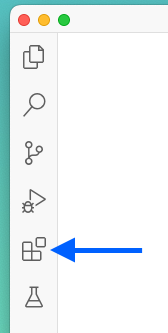
Then we’re going to install three things:
The Python extension bundle from Microsoft (something like 100m installations),
The Jupyter extension bundle from Microsoft, and
The Black Formatter extension from Microsoft.
Note that the first two will have a little green stacked-box icon in the top left, indicating these are actually extension bundles — when you install them you’ll actually end up with a handful of installed individual extensions.
The process should look something like this:
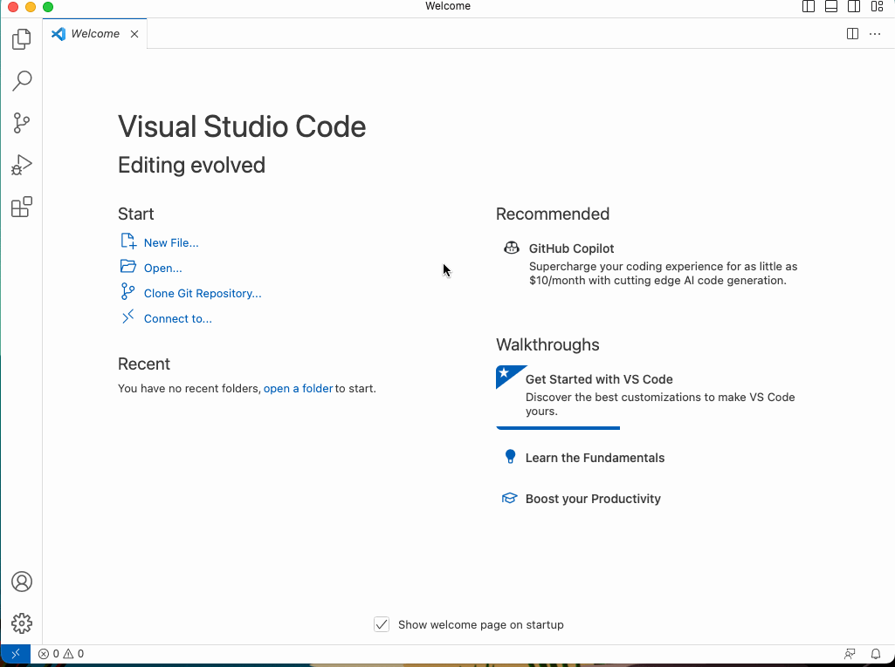
Set Default Python Interpreter#
The way Python has been designed, it is actually possible to have as many different installations of Python co-existing on your computer as you’d like. This makes it possible to have installations of Python with different installed packages — a good way to avoid package conflicts — or installations of different versions of Python or packages — allowing you to test code compatibility.
I would strongly recommend using the “base” version of Python you installed when you installed miniconda as your default interpreter. To activate this, type Command-Shift-P (Mac) or Control-Shift-P (Windows) and start typing Python: Select Interpreter until that text is selected, then type enter. Then select the version of Python in your miniforge3 directory (it should say conda in grey on the left as well). Provided you’re doing this after initially installing your Python extensions, VS Code will treat this as your default Python interpreter whenever new Python files are opened (you can also set this manually by directly adding the path to your conda install in the settings, as discussed below, although the GIF below says miniconda not miniforge, and is probably gotta end up being a little out of date in some small way over time…).
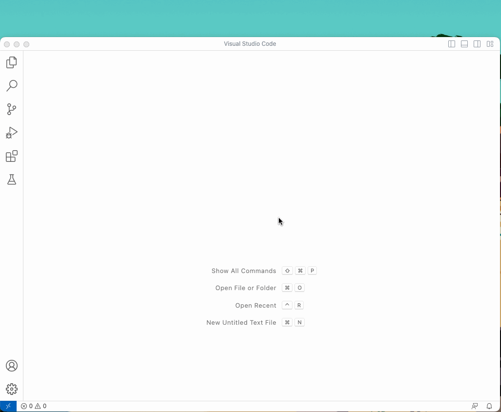
Managing Settings/Preferences in VS Code#
Settings in VS Code can be viewed in to different ways: in a nice graphical user interface with text descriptions of how various preferences work, and in a succinct JSON text-file where all user settings that differ from defaults are actually saved.
Preferences Graphical UI
The more graphical UI for settings can be reached using either the Preferences: Open User Settings or Preferences: Open Settings (UI) option in the Command Palette (they do the same thing). It presents a nice graphical user interface for modifying settings, complete with descriptions of what each setting does, and you can search through preferences using the text search box or by using the navigation headings on the left:
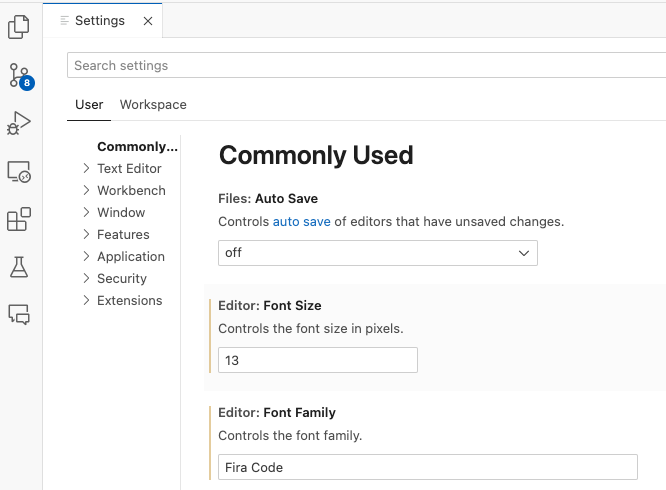
Preferences JSON File
Whenever you specify a preference that differs from the system default, VS Code writes that modification to a JSON-formatted text file (we’ll talk more about the JSON format in a latter reading). For example, if you look at your JSON file now, it will probably look something like this — though it should say miniforge3 not miniconda3 in the default Python interpreter path — containing only the settings you’ve modified so far since installing VS Code (namely: your color theme and the path to your default Python interpreter):
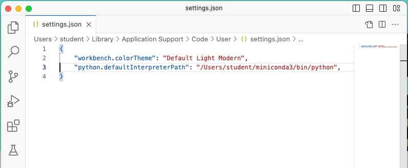
(Over time, this file will get far more complicated — my personal settings.json file is about 150 lines at the moment.)
It’s important to emphasize that these interfaces are two sides of the same coin, and over time you will want to become comfortable with both. The GUI interface is the place you go when you aren’t sure what options are provided by an extension, or you aren’t sure how an extension’s preferences work, while other times you’ll just want to make quick changes in the more succinct JSON file.
Recommended Initial Settings#
Format on Save with Black Extension#
The first setting I’m going to recommend is to turn on “Format on Save” for your Python files. When active, any time you save your .py file, VS Code will run a program that formats your code so that it is consistent with a specific set of style guidelines. For example, suppose you have a file that looks like this—no spacing between operators, use of single quote quotation marks (') when not required, and a function signature that’s so long that it runs off the edge of your window. With format on save activated, as soon as you type Command-S, it will be restructured in a clean, deterministic fashion:
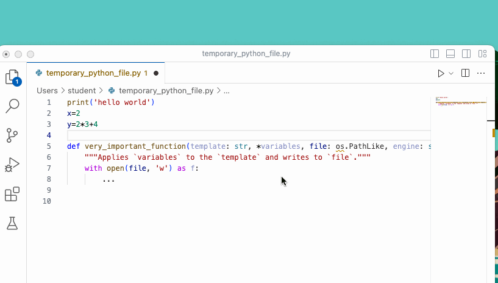
Why is this important? In short, because humans are really good at visual pattern recognition, and so the more that the visual formatting of our code reflects the underlying logic it embodies, the more likely we are to notice when we make mistakes (which are inevitable — a topic we’ll return to in a later reading).
So in particular, we are going to modify three settings:
Turn on
Editor: Format on SaveTurn on
Notebook: Format on Save(this ensures that Format on Save is also enabled for Jupyter Notebooks. If you don’t know what those are, don’t worry — we’ll talk about them soon!)Set the default formatter for Python to the Microsoft Black Formatter Extension. (VS Code doesn’t need this extension to format files, but it formats files much faster than if you don’t use the extension, so I strongly recommend using it.)
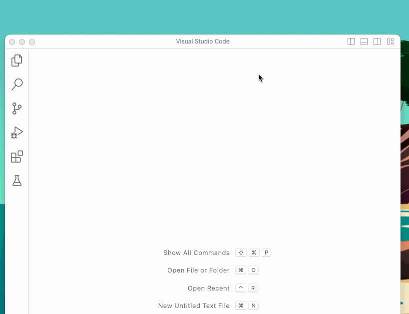
Once you’re done, you may find it interesting to look at your settings.json file just to see how these settings have been recorded. It should look roughly like this:
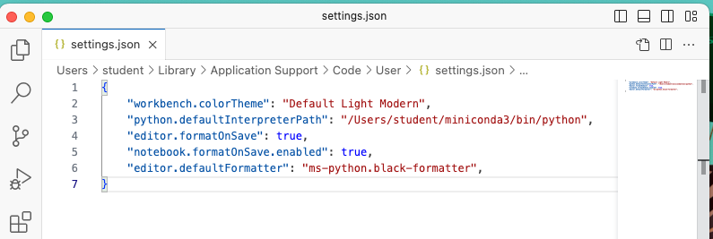
What is “Black”? Black is an “opinionated code formatter.” As they say on their website “By using Black, you agree to cede control over minutiae of hand-formatting. In return, Black gives you speed, determinism, and freedom from pycodestyle nagging about formatting. You will save time and mental energy for more important matters.” It’s become the standard for formatting Python code, not necessarily because everyone thinks the way it styles codes is “the best,” but rather because it’s put an end to fights over code format that used to arise in every open-source project. The name for the package comes from a quotation from Henry Ford, who once said of the first mass produced automobile, the Model T, “Any customer can have a car painted any color that he wants so long as it is black.”
NOTE: as of September 2023, it seems there’s bit of a bug in the formatter. If you see
Formatting with autopep8...towards the lower left of the bottom VS Code status bar when you save your notebooks or Python files (after making these changes) try adding this line to yoursettings.json:
"python.formatting.provider": "none",
Set terminal.integrated.inheritEnv to False in VS Code#
In order to ensure that the integrated terminal in VS Code works properly with conda, we have to modify the terminal.integrated.inheritEnv setting. You can do this by searching that preference name in the Preference GUI and unchecking the relevant box, or you can add the following to the bottom of your settings.json file:
"terminal.integrated.inheritEnv": false,
Make sure you add a comma to the end of the preceding line, so it looks something like this:
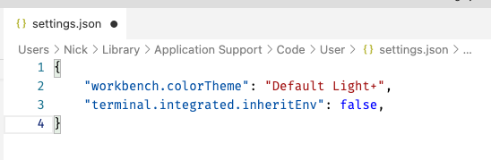
If you ever fail to add this setting when using Python in VS Code, it will prompt you with this notification the next time you try and run Python code:
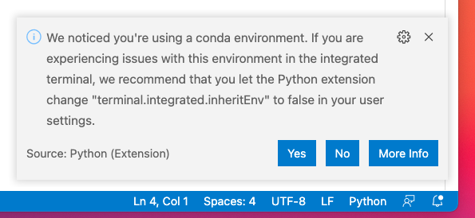
So if you see that notification make sure to select yes.
Run Some Python Code!#
Now that you have Python installed and VS Code setup, you’re off to the races! When you open a Python file, you have two options for executing your code:
Open Python, Run File, Close Python
To have VS Code launch Python, run your current file, then close that session of Python, click the arrow in the top right, or right-click in your file, and under Run Python select Run Python File in Terminal:
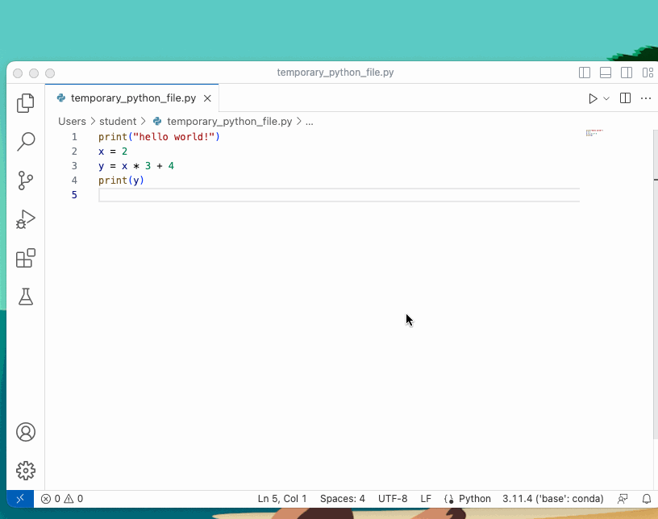
Open Python, Run Selected Code, Leave Python Open
To have VS Code launch Python, run whatever code you currently have highlighted, and leave the Python session open, just highlight the code you want to run and then either:
right-click the highlighted code, and under
Run PythonselectRun Selection/Line in Python Terminal, ortype
shift-enter.
You will see that after running code this way, the Python session stays open, and subsequent selections will run in that open session.
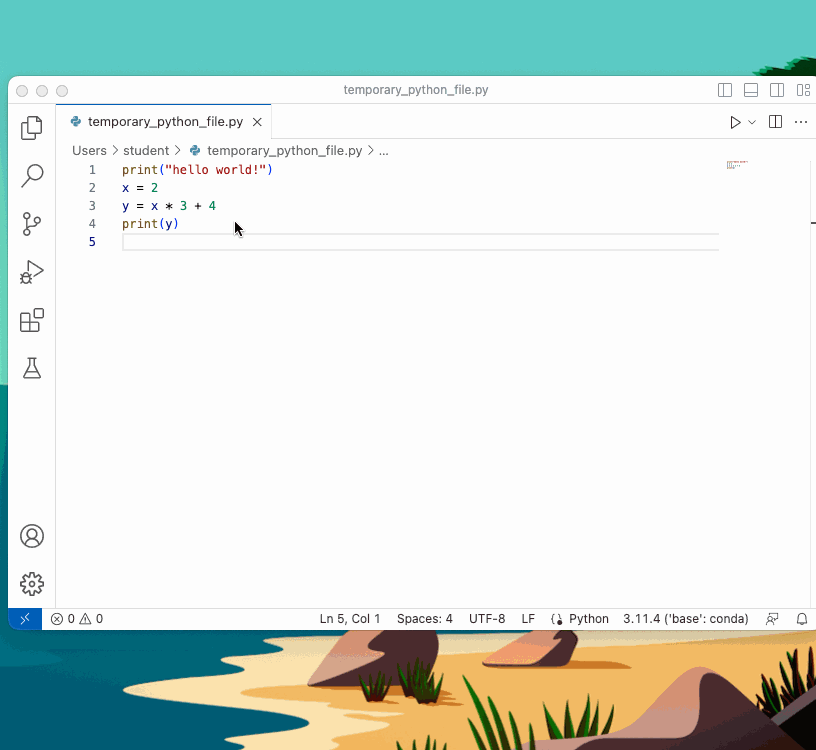
The
Xon the terminal will close the panel showing the terminal, but it does not kill the current Python session. To kill the open Python session, click the Trash Can icon.